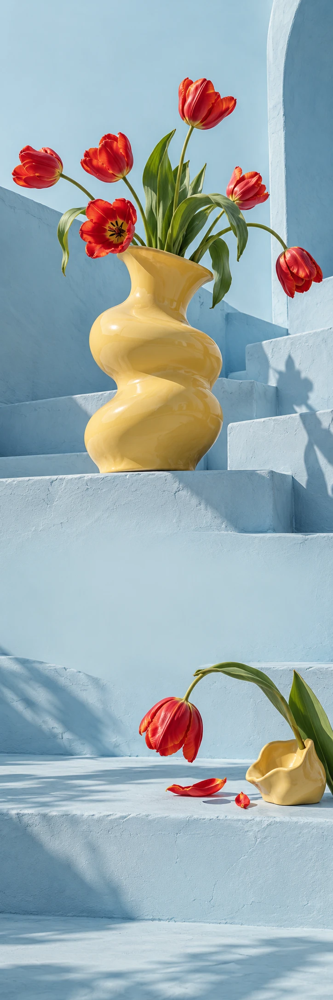

PALOMA OBJECTS
Interieur & bloemenObjectlancering
NOT ANOTHER ORDINARY VASE
ROOM FOR
A LITTLE WEIRD.
Ontdek Paloma PALOMA OBJECTS / VAN DICHTBIJ
Een vorm
met karakter.
Een sculpturale vaas, een paar eigenwijze tulpen en ineens ziet je tafel er anders uit. Paloma laat ruimte voor de mooie afwijking.
01Keramiek
02Kleur
03Karakter
Let your
flowers wander.
Perfect recht is ook maar een optie.
Ontdek Paloma